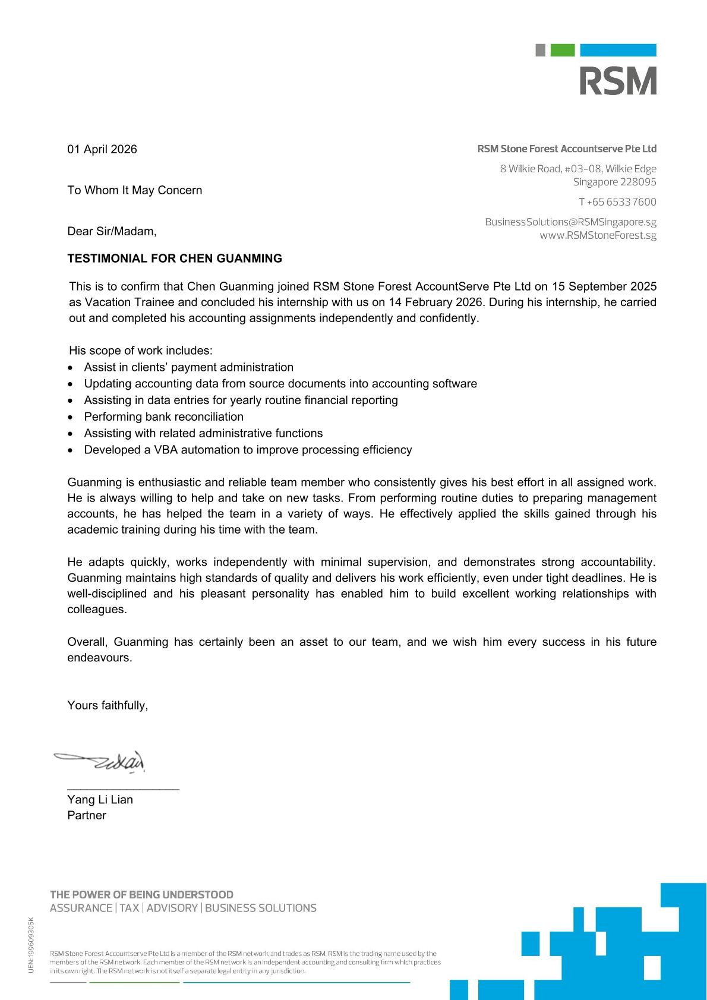
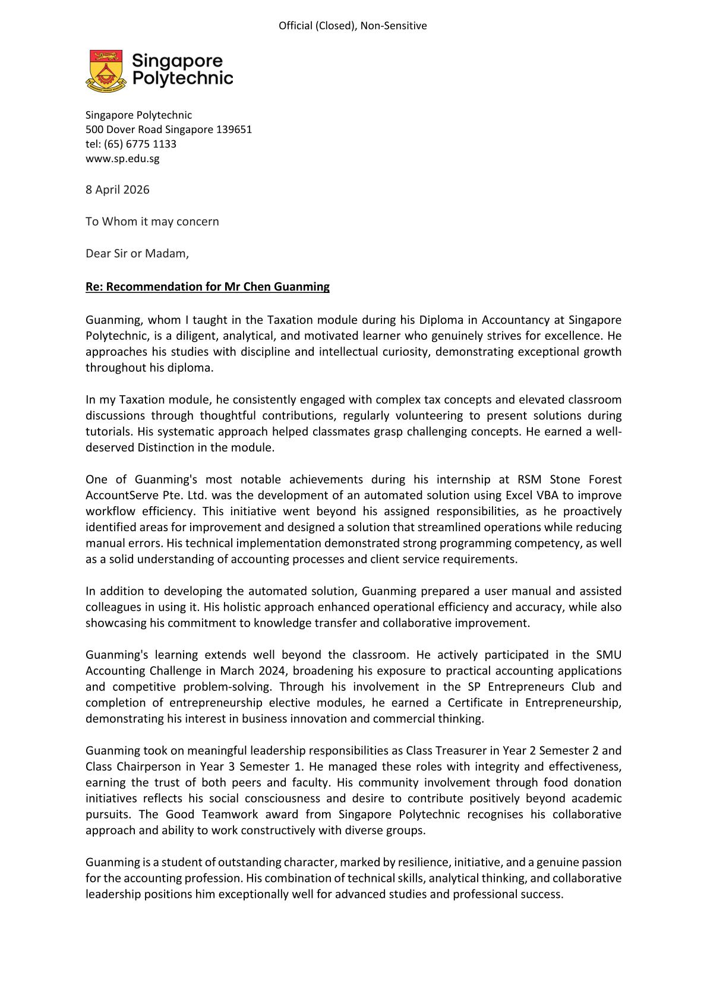
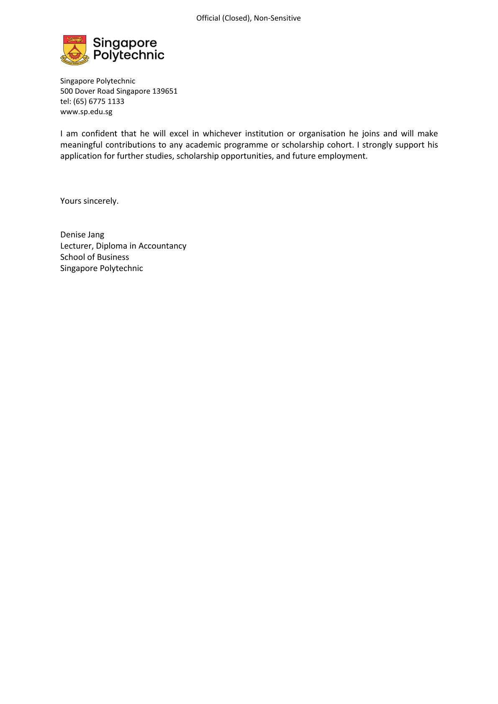
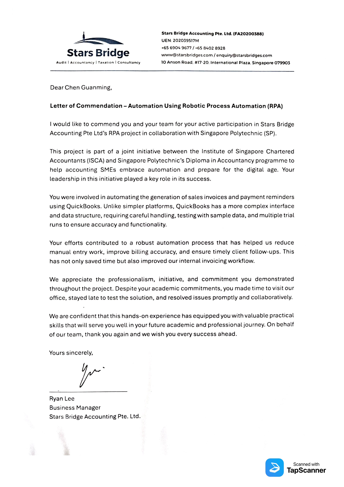
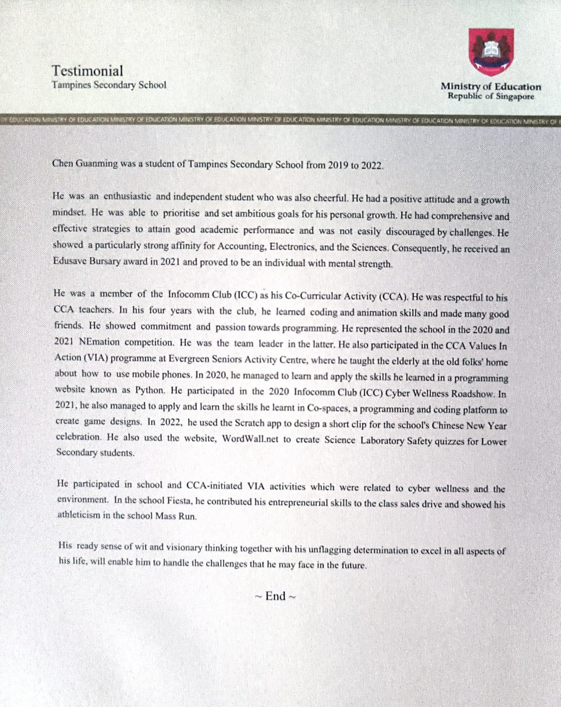

Internship Testimonial – RSM Stone Forest AccountServe

This certificate highlighted my discipline, teamwork, and initiative during the internship, especially in developing automation solutions that improved workflows.
Lecturer's Testimonial – Singapore Polytechnic


This testimonial from my lecturer at Singapore Polytechnic highlighted my academic excellence, professionalism, and consistent contributions to group projects and class activities, reinforcing my initiative and readiness for future opportunities.
Letter of Commendation – Stars Bridge Accounting

This commendation acknowledged the successful RPA project my team delivered, recognizing our professionalism and the tangible value created for the client.
Academic, Leadership & CCA Testimonial – Tampines Secondary School

This testimonial recognized my leadership and service contributions in CCA, affirming the impact I made in school activities and community engagement.